Histogram (clip, string ''mode''[, float ''factor''])
A multipurpose audio/video analysis tool, which supports the following modes:
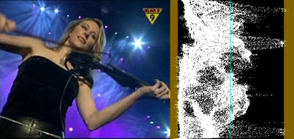
This will add a per-line luminance graph (which is actually called a Waveform Monitor) on the right side of the video. The left side of the graph represents luma = 0 and the right side represents luma = 255. The non-valid CCIR-601 ranges are shown in a brown/yellowish color, and a greenish line represents Y = 128.
Available in YUV mode.
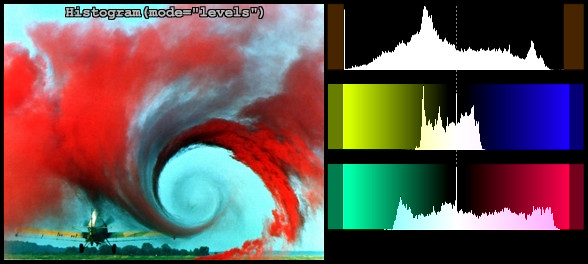
This mode will display three histograms on the right side of the video frame. This will show the distribution of the Y, U and V components in the current frame.
The top graph displays the luma (Y) distribution of the frame, where the left side represents Y = 0 and the right side represents Y = 255. The valid CCIR601 range has been indicated by a slightly different color and Y = 128 has been marked with a dotted line. The vertical axis shows the number of pixels for a given luma (Y) value. The middle graph displays the U component, and the bottom graph displays the V component.
The factor option (100.0 by default) specifies the way how the graphs are displayed. It is specified as percentage of the total population (that is number of luma or chroma pixels in a frame). For example, HistoGram("Levels", 1.5625) will achieve a 1/64th cap.
Available in all planar mode except Y8.
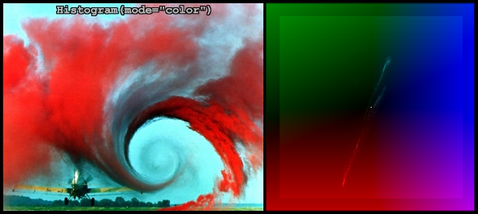
This mode will display the chroma values (U/V color placement) in a two dimensional graph (which is called a vectorscope) on the right side of the video frame. It can be used to read of the hue and saturation of a clip. At the same time it is a histogram. The whiter a pixel in the vectorscope, the more pixels of the input clip correspond to that pixel (that is the more pixels have this chroma value).
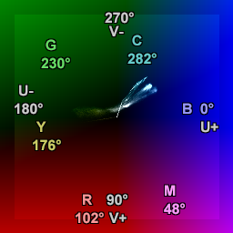 |
The U component is displayed on the horizontal (X) axis, with the leftmost side being U = 0 and the rightmost side being U = 255. The V component is displayed on the vertical (Y) axis, with the top representing V = 0 and the bottom representing V = 255. The position of a white pixel in the graph corresponds to the chroma value of a pixel of the input clip. So the graph can be used to read of the hue (color flavor) and the saturation (the dominance of the hue in the color). As the hue of a color changes, it moves around the square. At the center of the square, the saturation is zero, which means that the corresponding pixel has no color. If you increase the amount of a specific color, while leaving the other colors unchanged, the saturation increases, and you move towards the edge of the square. |
Available in all planar mode except Y8.
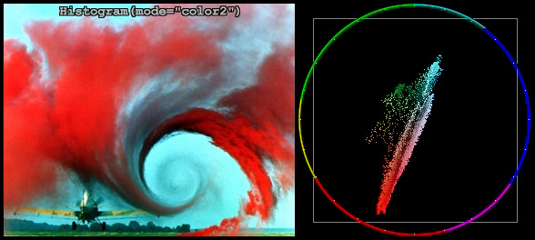
This mode will display the pixels in a two dimensional graph ( called a vectorscope) on the right side of the video frame. It can be used to read of the hue and saturation of a clip.
The U component is displayed on the horizontal (X) axis, with the leftmost side being U = 0 and the rightmost side being U = 255. The V component is displayed on the vertical (Y) axis, with the top representing V = 0 and the bottom representing V = 255. The grey square denotes the valid CCIR601 range.
The position of a pixel in the graph corresponds to the chroma value of a pixel of the input clip. So the graph can be used to read of the hue (color flavor) and the saturation (the dominance of the hue in the color). As the hue of a color changes, it moves around the circle. At the center of the circle, the saturation is zero, which means that the corresponding pixel has no color. If you increase the amount of a specific color, while leaving the other colors unchanged, the saturation increases, and you move towards the edge of the circle. A color wheel is plotted and divided into six hues (red, yellow, green, cyan, blue and magenta) to help you reading of the hue values. Also every 15 degrees a white dot is plotted.
At U=255, V=128 the hue is zero (which corresponds to blue) and the saturation is maximal, that is, sqrt( (U-128)^2 + (V-128)^2 ) = 127. When turning clock-wise, say 90 degrees, the chroma is given by U=128, V=255 (which corresponds to red). Keeping the hue constant and decreasing the saturation, means that we move from the circle to the center of the vectorscope. Thus te color flavor remains the same (namely red), only it changes slowly to greyscale. Etc ...
Available in all planar mode except Y8.
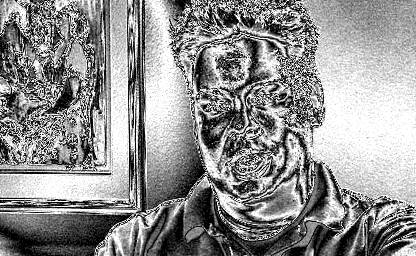
This mode will amplify luminance, and display very small luminance variations. This is good for detecting blocking and noise, and can be helpful at adjusting filter parameters. In this mode a 1 pixel luminance difference will show as a 16 pixel luminance pixel, thus seriously enhancing small flaws.
Available in planar and YUY2 modes.
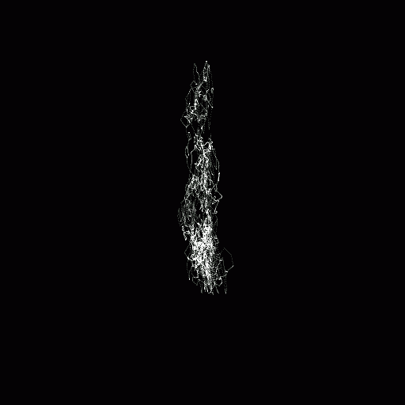
This mode shows a classic stereo graph, from the audio in the clip. Some may know these from recording studios. This can be used to see the left-right and phase distribution of the input signal. StereoOverlay will overlay the graph on top of the original. Each frame will contain only information from the current frame to the beginning of the next frame. The signal is linearly upsampled 8x, to provide clearer visuals. Stereo and StereoY8 won't overlay the graph on the video, but will just return the graph (in YV12 respectively Y8 format).
This mode requires a stereo signal input and StereoOverlay requires YV12 video.
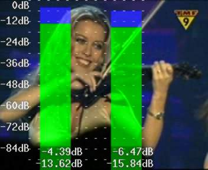
This mode shows the audio levels for each channel in decibels (multichannel is supported). More accurately it determines:
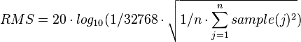
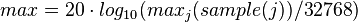
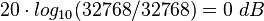
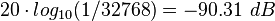
Changes:
| v2.53 | Added different modes. |
| v2.55 | Added dots to mode = "stereo" to show bias/offsets. |
| v2.56 | Added invalid colors in YUY2 mode. |
| v2.58 | Color2 and AudioLevels modes added. |
| v2.58 | Added planar support. |
| v2.60 | Added StereoY8 mode. Added factor option. |
$Date: 2015/01/12 01:20:43 $